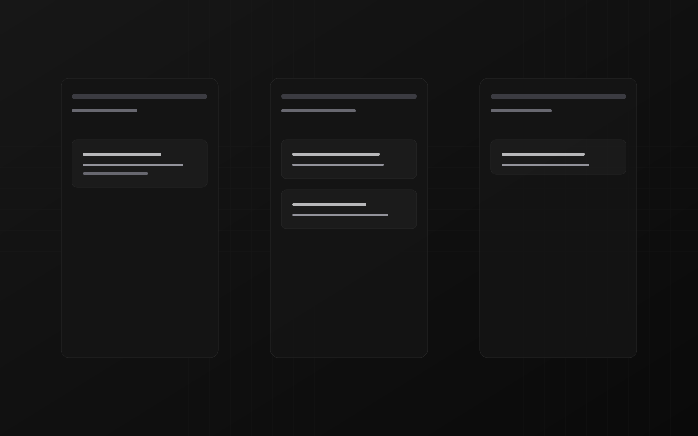

Kanban Flow
Kanban management system
A Kanban-based task management system with front-end and back-end components. The interface is organised around a visual board, making it easier to see work as it moves through different stages.
The problem
Task lists can make it difficult to see what is in progress, what is blocked, and what is complete. Kanban Flow explores a visual, column-based way to organise work and follow its flow.
What it does
- Organises tasks across workflow stages on a visual board
- Provides a front-end interface for working with tasks
- Connects to back-end components that support the application
Project scope
Stack details and project links are being verified before they are published.